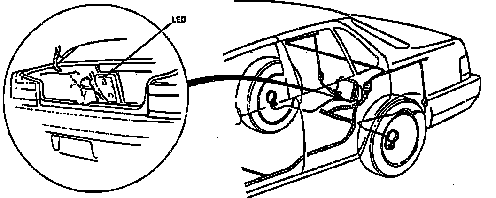
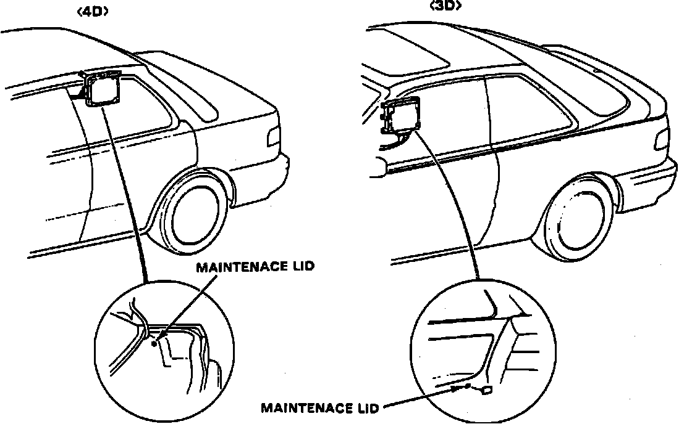
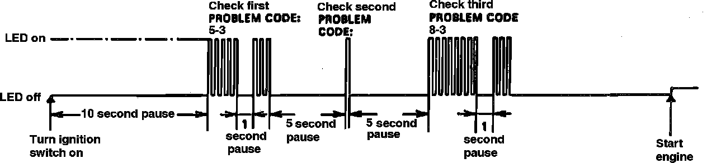
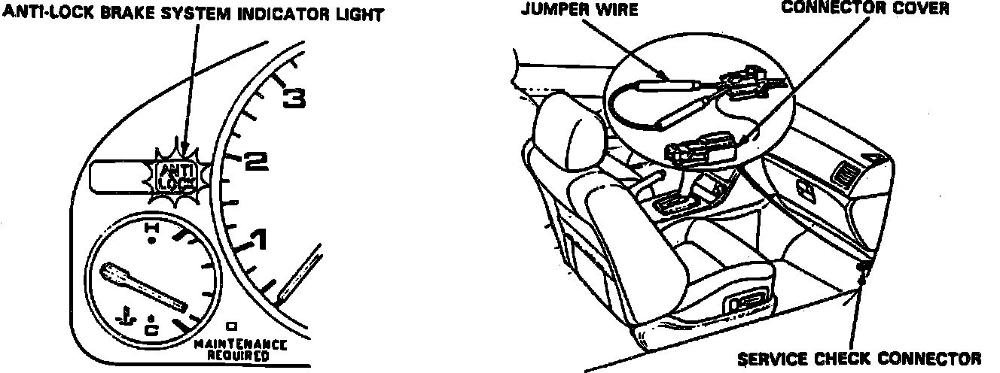
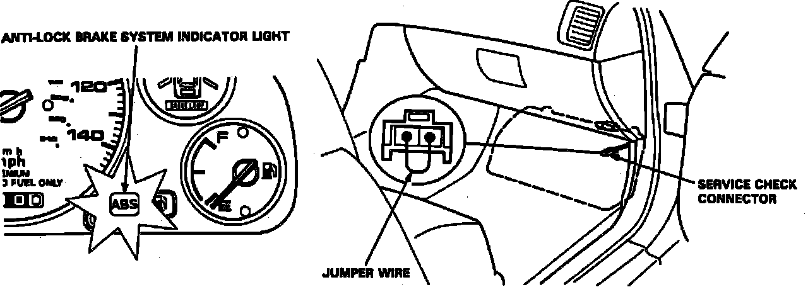

Initial Inspection and Diagnostic Overview
Temporary Driving Conditions1. The anti-lock warning lamp will come on and control unit memorizes problems under certain conditions as follows:
a. On 1989-90 Legend models, problem code 4-4, 4-8 and 4-12, tire adhesion lost due to excessive cornering speed.
b. On Integra, 1991-93 Legend and 1992,93 Vigor models, problem code 5, 5-4 and 5-8, tire adhesion lost due to excessive cornering speed.
c. On 1989-90 Legend models, problem code 5, vehicle looses traction when starting from a stuck condition.
d. On Integra, 1991-93 Legend and 1992,93 Vigor models, problem code 4-1, 4-2, 4-4 and 4-8, vehicle looses traction when starting from a stuck condition.
e. On all models, problem code 2, when parking brake is applied for more than 30 seconds while vehicle is being driven.
f. Vehicle is driven over extremely rough roads.
2. If anti-lock warning lamp goes off after engine is turned off, than back on, ALB system is operating normally.
Warning Lamp Circuit
1. If anti-lock warning light does not go on when ignition is turned on, check the following items:
a. Blown anti-lock warning bulb.
b. On 1989-90 Legend models, open circuit in yellow lead between No. 5 fuse and combination meter.
c. On 1991-93 Legend models, open circuit in yellow lead between No. 13 fuse and combination meter.
d. On Integra models, open circuit in yellow lead between No. 23 fuse and combination meter.
e. On 1992,93 Vigor models, open circuit in yellow lead between No. 1 fuse and combination meter.
f. On all models, Open circuit in blue/red lead between combination meter and control unit.
g. Loose component ground of control unit to body.
h. If not loose or disconnected, install new control unit and recheck.
2. If anti-lock brake warning light remains on after engine is started and LED on the control unit does not blink any code or sub code, check for the following:
a. Loose or poor connection of wire harness at control unit.
b. Faulty ALB 2 fuse.
c. Open circuit in white lead between ALB 2 fuse and control unit.
d. Open circuit in yellow/black lead between fuse No. 17 on Integra and 1989-90 Legend models, fuse No. 3 on 1991-93 Legend models, or fuse No. 7 on 1992,93 Vigor models and failsafe relay.
e. On Legend and Vigor models, open or short in yellow/green lead between failsafe relay.
f. On 1990-91 Integra models, open or short in green lead between failsafe relay.
g. On all models, short circuit in blue/red lead between combination meter and control unit.
h. Open circuit in white/blue lead between alternator and control unit.
3. On Integra and 1989-90 Legend models, if warning lamp remains on while engine is running, proceed as follows:
a. Stop engine, then turn ignition switch on, ensuring anti-lock warning lamp comes on.
b. Restart engine, check warning lamp. If warning lamp goes off there is no problem.
c. If warning lamp remains on, stop engine, then open trunk or, if equipped, ALB maintenance lid.
d. Turn ignition switch on, do not start engine.
Fig. 5 Control Unit:

Fig. 6 Control Unit:

Fig. 7 Control Unit Troubleshooting LED:

e. Record blinking frequency of LED on control unit. Read trouble codes, Fig. 5 through 7.
4. On 1991-93 Legend and 1992,93 Vigor models, if warning lamp remains on while engine is running, proceed as follows:
a. Stop engine, then turn ignition switch on, ensuring anti-lock warning lamp comes on.
b. Restart engine, check warning lamp. If warning lamp goes off there is no problem.
c. If warning lamp remains on, stop engine, disconnect service connector located below glove box.
Fig. 8 Trouble Code Indicator:

Fig. 9 Trouble Code Indicator:

d. Using suitable jumper wire, connect two connectors, Figs. 8 and 9.
e. Turn ignition switch On, but do not start engine.
f. Record blinking frequency of anti-lock brake indicator lamp, Fig. 7 through 9.
g. Before starting engine, disconnect jumper wire from service connector, or Check Engine lamp will remain illuminated.
5. On all models, the control unit can indicate up to three trouble codes. If LED does not light, repeat steps 1 through 4.
6. If required, turn ignition switch off, then turn on to read LED.
7. After repair is completed, disconnect ALB 2 fuse on models except 1992,93 Integra or ABS B2 fuse on 1992,93 Integra, for three seconds to erase control unit memory, then turn ignition switch on to recheck.
8. Memory is erased if connector is disconnected from control unit or control unit is removed from body.